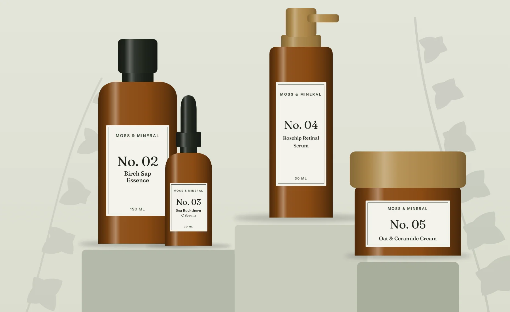
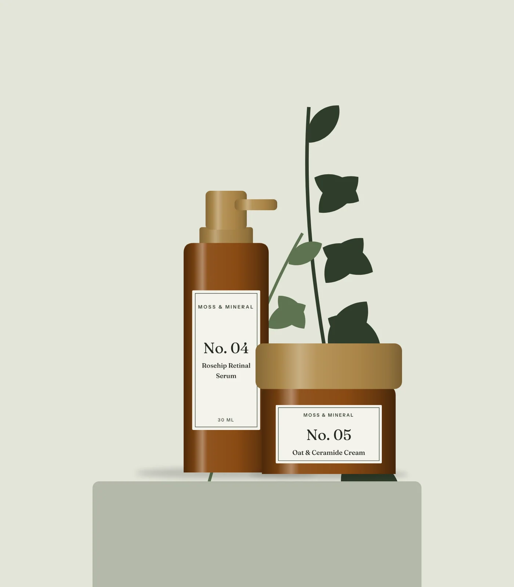

Fennel seed
Steam-distilled from seed grown in Kent. Gently clarifying, which is why it anchors our gel cleanser.
No. 01 Fennel Gel CleanserEight formulas built around one plant and one proven active each. We print both on the label, with the amount.

Every product we make, by catalogue number. The key active and its percentage are listed exactly as they appear on the bottle.
Steam-distilled from seed grown in Kent. Gently clarifying, which is why it anchors our gel cleanser.
No. 01 Fennel Gel CleanserTapped for three weeks each March. Rich in minerals and sugars that help skin hold water.
No. 02 Birch Sap EssenceCold-pressed berry oil, naturally high in carotenoids and omega-7. It warms dull skin.
No. 03 Sea Buckthorn C Serum
Each formula is mixed, filled and labelled by hand in our workshop. The batch number on your bottle tells us the day it was made and the harvest it came from.
Amber glass protects the actives from light. Return five empties and we'll send a refill free.
Visit the apothecary